首星整体翻新 · 0.4.0 实际运行审核
已登记本源码的内部画面复审结果；最终美术验收及真实手机体验仍由用户审核，不能由此推定手机通过。
运行源码 f1397e268b4dec43a241833da077b08104451c8e · Draft PR #2 · 本机固定运行包
这是首星整体翻新的开发审核包，目标覆盖六件奇物及全部可达页面；实际完成范围见下方覆盖缺口，非此前三件局部样板。以下截图和连续录像来自桌面Chromium/WebKit触控仿真与独立审阅档，不是实际手机截图或手机录像。展示／升级使用普通探索、离线归航赚取与实际付款生成的隔离审阅档，不是新手初始画面，完整夹具及费用留在报告中。截图可使用未来档案时刻固定状态；连续视频依各报告的真实墙钟记录、1倍速度。未打开、清除或覆盖用户个人浏览器存档，继续使用v037格式。测试通过不等于美术通过；手机触控、锁屏恢复、低端GPU与长时发热仍待真实手机审核。不合并、不提审、不正式发布。
当前报告引用且本地存在：223 张页面／实录帧／画布裁片、54 项透明材质记录、11 段连续录像。未生成的文件不以占位图补齐。
| 采集模块 | 实际状态 | 来源 |
|---|
| 三态／星雾／抽屉截图 | 报告已生成，78图 / 0视频；视觉状态另列 | 原始JSON |
| 连续助力 | 报告已生成，7图 / 1视频；视觉状态另列 | 原始JSON |
| 六件处理与试验 | 报告已生成，42图 / 6视频；视觉状态另列 | 原始JSON |
| 全页面 | 报告已生成，81图 / 0视频；视觉状态另列 | 原始JSON |
| 完整昼夜 | 报告已生成，4图 / 1视频；视觉状态另列 | 原始JSON |
| 收藏取放与展柜安装 | 报告已生成，9图 / 2视频；视觉状态另列 | 原始JSON |
| 收据出土 | 报告已生成，2图 / 1视频；视觉状态另列 | 原始JSON |
当前已读取报告未登记采集错误；这不等于视觉验收通过。
上述报告引用的媒体均已在本地找到；完成范围仍以覆盖表与用户视觉审核为准。
三张原始PNG · 已推送来源
原始PNG本地逐字节校验 3/3；远端交接回读记录与本地字节一致 3/3。已推送原图提交 48efa5212385273bf4a4f618c9ed88702f1303f1。回读时间 2026-11-05T16:40:55.033728+00:00，本脚本不重新声称执行网络回读。
查看三张完整原始设计板
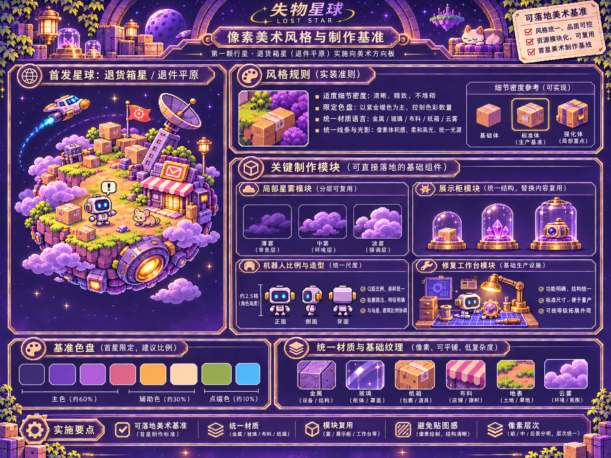
统一像素美术、材质、比例和可复用模块 · 原始PNG，非运行图层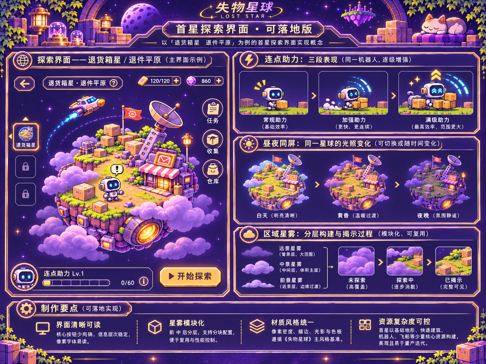
首星探索、连点动作、昼夜与区域星雾 · 原始PNG，非运行图层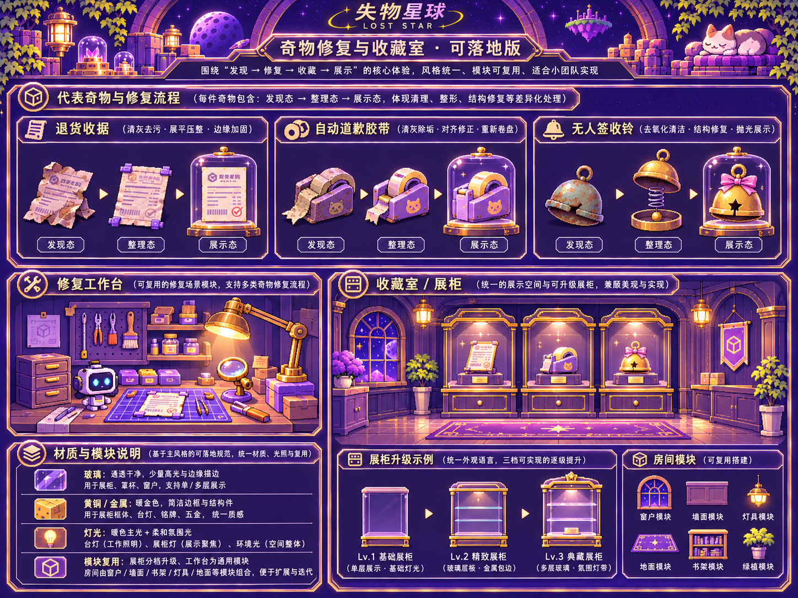
三态奇物、修复工作台、收藏室与展柜 · 原始PNG，非运行图层设计稿／旧版／新版
设计板整张原图保留，不裁为运行素材。旧版画面明确标注历史版本；进度、柜级及视角可能不同，不能将对比本身当作同档数值验证。
首星探索
已确认原始设计板 · 风格与分层参考，含示意规则，不是运行截图整理工作台
已确认原始设计板 · 风格与分层参考，含示意规则，不是运行截图收藏室与基地
已确认原始设计板 · 风格与分层参考，含示意规则，不是运行截图
六件奇物 · 完整18态
打开六物18态正式PNG联系表（18/18）。下方实际工作台仅使用当前采集报告，不用素材图冒充运行截图。
未购买的退货收据 · 三态实际工作台
道歉胶带 · 三态实际工作台
无限套娃包裹 · 三态实际工作台
昨日邮戳 · 三态实际工作台
收件人：宇宙 · 三态实际工作台
无人签收铃 · 三态实际工作台
七类连续动画审核位
每类只显示报告中已登记且确实存在的MP4；尚未产出的类别保持待补。六物完整处理录像包含清理、修复与免费表演，不拆成截图视频或计作额外独立录制。
助力三档与自然回落
assist-three-tiers-36s.mp4 · 36.0秒 · 桌面触控仿真，非真机录像打开原始MP4 区域星雾揭晓（与助力共用同一条连续实录，不另计录像）
assist-three-tiers-36s.mp4 · 36.0秒 · 桌面触控仿真，非真机录像打开原始MP4 六件清理、修复与免费冷幽默试验
receipt · 自然清理→修复→免费试验，11.17秒实测，1倍速度 · 11.2秒 · 桌面触控仿真，非真机录像打开原始MP4tape · 自然清理→修复→免费试验，9.83秒实测，1倍速度 · 9.8秒 · 桌面触控仿真，非真机录像打开原始MP4nested · 自然清理→修复→免费试验，9.71秒实测，1倍速度 · 9.7秒 · 桌面触控仿真，非真机录像打开原始MP4stamp · 自然清理→修复→免费试验，9.78秒实测，1倍速度 · 9.8秒 · 桌面触控仿真，非真机录像打开原始MP4cosmic-parcel · 自然清理→修复→免费试验，9.81秒实测，1倍速度 · 9.8秒 · 桌面触控仿真，非真机录像打开原始MP4bell · 自然清理→修复→免费试验，9.82秒实测，1倍速度 · 9.8秒 · 桌面触控仿真，非真机录像打开原始MP4 跨柜整理与真实取放
museum-two-cabinets-70s.mp4 · 70.0秒 · 桌面触控仿真，非真机录像打开原始MP4 0→3级实际购买与安装
case-0-to-3-installation.mp4 · 14.3秒 · 桌面触控仿真，非真机录像打开原始MP4 同屏完整昼夜、异常与晨修
complete-daynight-312s.mp4 · 312.0秒 · 桌面触控仿真，非真机录像打开原始MP4 收据松土、承托与出土
receipt-excavation-natural.mp4 · 7.1秒 · 桌面触控仿真，非真机录像打开原始MP4
真实处理与收费账本
| 奇物 | 完整处理 | 试验免费检查 | 防重付检查 |
|---|
| 未购买的退货收据 | 已完整记录 | True | True |
| 道歉胶带 | 已完整记录 | True | True |
| 无限套娃包裹 | 已完整记录 | True | True |
| 昨日邮戳 | 已完整记录 | True | True |
| 收件人：宇宙 | 已完整记录 | True | True |
| 无人签收铃 | 已完整记录 | True | True |
未购买的退货收据
| 动作 | 报价 | 收入／维修调和后实付 |
|---|
| clean | 40 | 40 |
| repair | 120 | 120 |
免费试验防收费检查：True。完整逐步账本见treatment报告。
道歉胶带
| 动作 | 报价 | 收入／维修调和后实付 |
|---|
| clean | 30 | 30 |
| repair | 100 | 100 |
免费试验防收费检查：True。完整逐步账本见treatment报告。
无限套娃包裹
| 动作 | 报价 | 收入／维修调和后实付 |
|---|
| clean | 50 | 50 |
| repair | 140 | 140 |
免费试验防收费检查：True。完整逐步账本见treatment报告。
昨日邮戳
| 动作 | 报价 | 收入／维修调和后实付 |
|---|
| clean | 45 | 45 |
| repair | 180 | 180 |
免费试验防收费检查：True。完整逐步账本见treatment报告。
收件人：宇宙
| 动作 | 报价 | 收入／维修调和后实付 |
|---|
| clean | 60 | 60 |
| repair | 220 | 220 |
免费试验防收费检查：True。完整逐步账本见treatment报告。
无人签收铃
| 动作 | 报价 | 收入／维修调和后实付 |
|---|
| clean | 35 | 35 |
| repair | 120 | 120 |
免费试验防收费检查：True。完整逐步账本见treatment报告。
展柜实际购买
只是审阅档的主动购买，不向旧档重复收费。钱包净变动与探索收入、维修分别调和。
| 等级 | 当时报价按钮 | 实付零件 |
|---|
| 0→1 | 升级 160 | 160 |
| 1→2 | 升级 480 | 480 |
| 2→3 | 升级 1100 | 1100 |
同屏夜间与晨修
报告实际阶段 day→dusk→night→dawn；完整度最低 94，末帧 100；维修累计实付增量 18 零件。是否重复扣款另见离线／刷新模型与最终包回归，不能由一轮录像推定。
同一球体 · 星雾与观察／巡逻抽屉
星雾未解
星雾半解
揭晓后的白天
同屏夜巡
可达页面 · 多尺寸与两引擎
优先核对390×844，另含360×800、桌面及WebKit；截图只证明当时实际画面，完整交互回归另见浏览器结果和覆盖表。“已采集”不等于美术通过。
三居民独立生态／互动近景：已有对应采集文件，具体画面待审。
工程与旧分拣机详情：已有对应采集文件，具体画面待审。
历史记录／回放：已有对应采集文件，具体画面待审。
离线归航结算：已有对应采集文件，具体画面待审。
六柜各自玻璃近景：已有对应采集文件，具体画面待审。
chromium · 390×844 · chromium-390-collection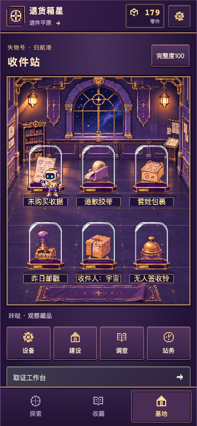
chromium · 390×844 · chromium-390-base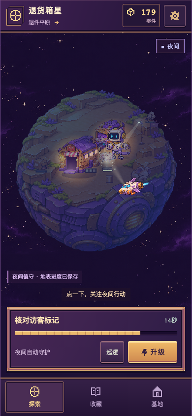
chromium · 390×844 · chromium-390-explore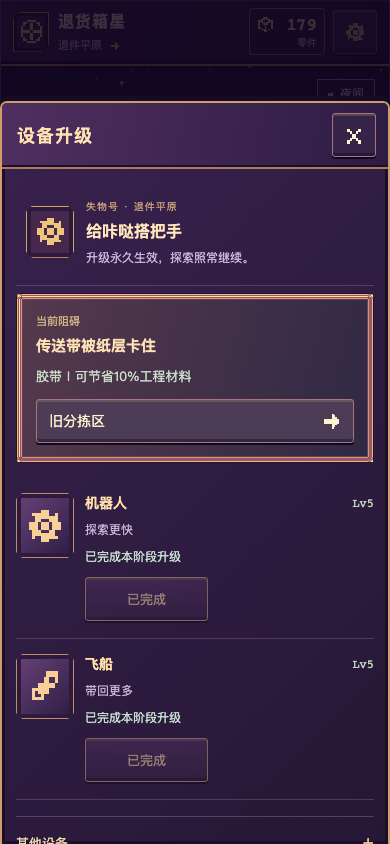
chromium · 390×844 · chromium-390-equipment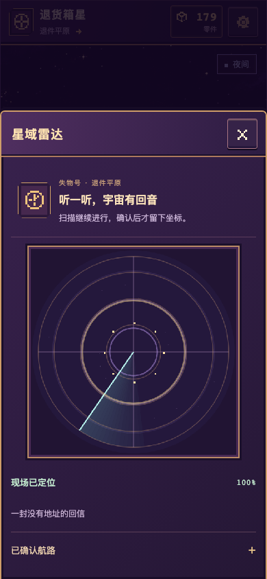
chromium · 390×844 · chromium-390-map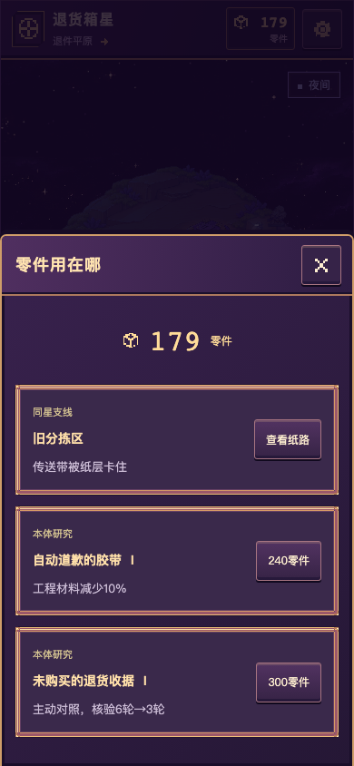
chromium · 390×844 · chromium-390-wallet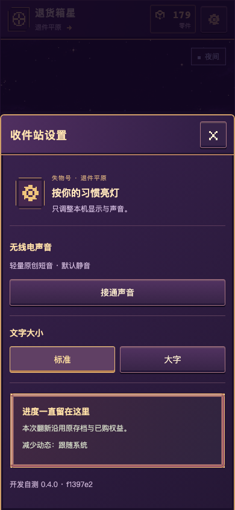
chromium · 390×844 · chromium-390-settings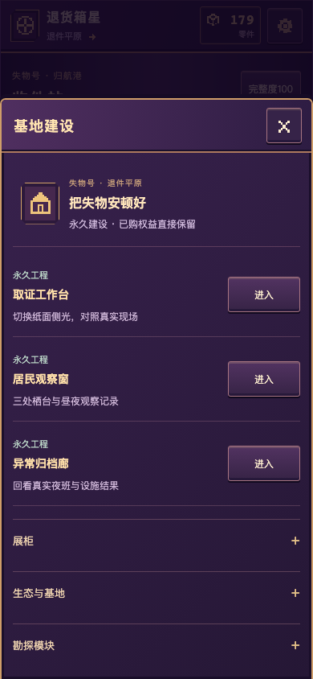
chromium · 390×844 · chromium-390-build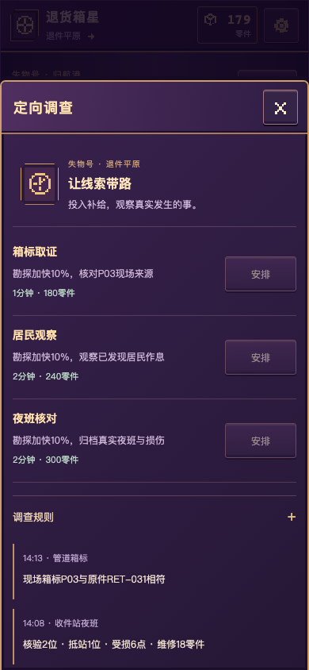
chromium · 390×844 · chromium-390-research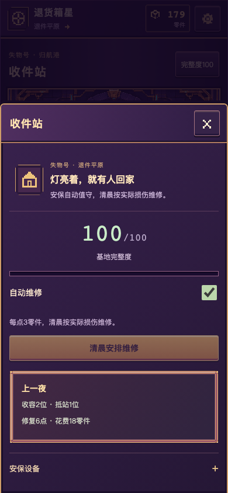
chromium · 390×844 · chromium-390-station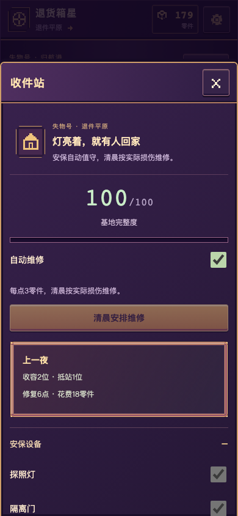
chromium · 390×844 · chromium-390-security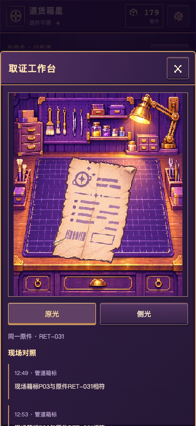
chromium · 390×844 · chromium-390-project-evidence-bench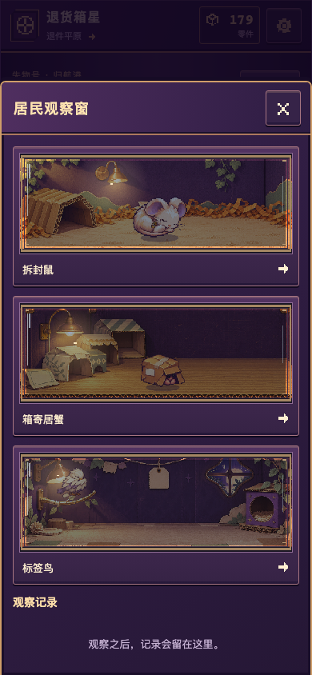
chromium · 390×844 · chromium-390-project-habitat-window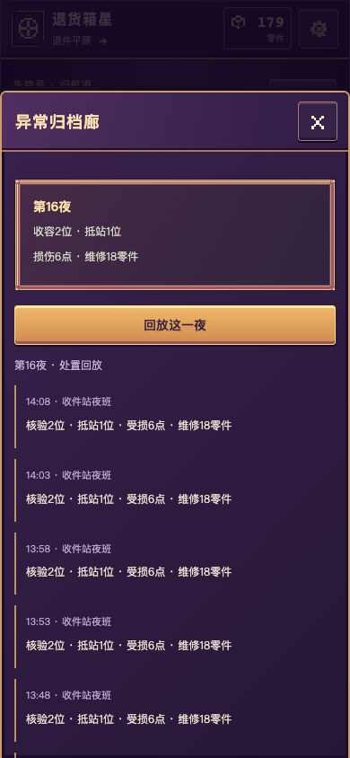
chromium · 390×844 · chromium-390-project-archive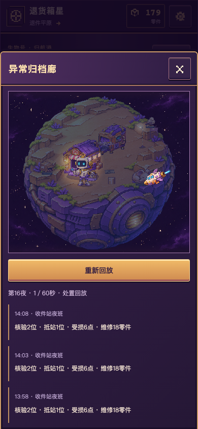
chromium · 390×844 · chromium-390-night-replay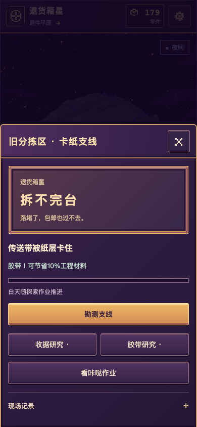
chromium · 390×844 · chromium-390-sorting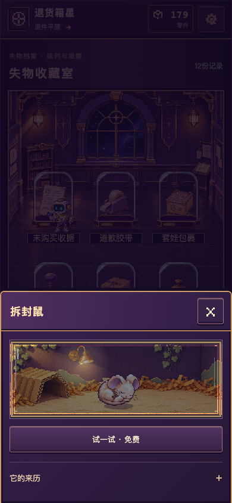
chromium · 390×844 · chromium-390-detail-mouse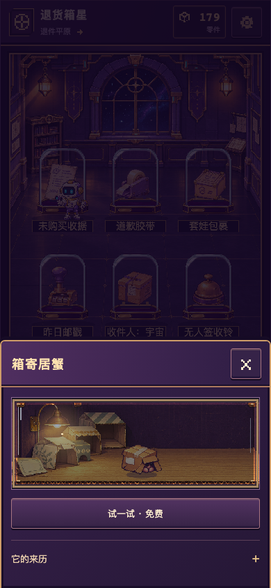
chromium · 390×844 · chromium-390-detail-hermitchromium · 390×844 · chromium-390-detail-tagbirdchromium · 390×844 · chromium-390-detail-night-shiftchromium · 360×800 · chromium-360-collectionchromium · 360×800 · chromium-360-basechromium · 360×800 · chromium-360-explorechromium · 360×800 · chromium-360-equipmentchromium · 360×800 · chromium-360-mapchromium · 360×800 · chromium-360-walletchromium · 360×800 · chromium-360-settingschromium · 360×800 · chromium-360-buildchromium · 360×800 · chromium-360-researchchromium · 360×800 · chromium-360-stationchromium · 360×800 · chromium-360-securitychromium · 360×800 · chromium-360-project-evidence-benchchromium · 360×800 · chromium-360-project-habitat-windowchromium · 360×800 · chromium-360-project-archivechromium · 360×800 · chromium-360-night-replaychromium · 360×800 · chromium-360-sortingchromium · 360×800 · chromium-360-detail-mousechromium · 360×800 · chromium-360-detail-hermitchromium · 360×800 · chromium-360-detail-tagbirdchromium · 360×800 · chromium-360-detail-night-shiftwebkit · 390×844 · webkit-390-collectionwebkit · 390×844 · webkit-390-basewebkit · 390×844 · webkit-390-explorewebkit · 390×844 · webkit-390-equipmentwebkit · 390×844 · webkit-390-mapwebkit · 390×844 · webkit-390-walletwebkit · 390×844 · webkit-390-settingswebkit · 390×844 · webkit-390-buildwebkit · 390×844 · webkit-390-researchwebkit · 390×844 · webkit-390-stationwebkit · 390×844 · webkit-390-securitywebkit · 390×844 · webkit-390-project-evidence-benchwebkit · 390×844 · webkit-390-project-habitat-windowwebkit · 390×844 · webkit-390-project-archivewebkit · 390×844 · webkit-390-night-replaywebkit · 390×844 · webkit-390-sortingwebkit · 390×844 · webkit-390-detail-mousewebkit · 390×844 · webkit-390-detail-hermitwebkit · 390×844 · webkit-390-detail-tagbirdwebkit · 390×844 · webkit-390-detail-night-shiftchromium · 1440×1000 · chromium-1440-collectionchromium · 1440×1000 · chromium-1440-basechromium · 1440×1000 · chromium-1440-explorechromium · 1440×1000 · chromium-1440-equipmentchromium · 1440×1000 · chromium-1440-mapchromium · 1440×1000 · chromium-1440-walletchromium · 1440×1000 · chromium-1440-settingschromium · 1440×1000 · chromium-1440-buildchromium · 1440×1000 · chromium-1440-researchchromium · 1440×1000 · chromium-1440-stationchromium · 1440×1000 · chromium-1440-securitychromium · 1440×1000 · chromium-1440-project-evidence-benchchromium · 1440×1000 · chromium-1440-project-habitat-windowchromium · 1440×1000 · chromium-1440-project-archivechromium · 1440×1000 · chromium-1440-night-replaychromium · 1440×1000 · chromium-1440-sortingchromium · 1440×1000 · chromium-1440-detail-mousechromium · 1440×1000 · chromium-1440-detail-hermitchromium · 1440×1000 · chromium-1440-detail-tagbirdchromium · 1440×1000 · chromium-1440-detail-night-shiftchromium · 390×844 · chromium-390-return
验证、性能与开发自测
包体：9430895 字节；解压后 9749709 字节；169 个文件。ZIP SHA256 0cc48e3150bd70a32e2f3f28cbc84b32ed0385865385486e9c188d6d374b5254。
本地检查记录：{"exitCode": 0, "approvedPng": 3, "originalAssets": 20, "unitFiles": 56, "unitTests": 344, "browserTests": 454, "builds": ["main", "d1", "v034", "fusion", "v036"], "statementCoveragePercent": 97.05, "browserDurationMinutes": 8.4, "log": "check.log", "browserReport": "e2e-results.json"}。是否通过以原始报告状态和完整日志为准。
报告设备：{"cpu": "Apple M2 Pro", "platform": "darwin", "architecture": "arm64"}；方法：{"viewport": {"width": 390, "height": 844}, "dpr": 2, "concurrency": 1, "recording": false, "warmupMs": 1500, "sampleMs": 10000, "heap": "Chromium coarse JS heap only; excludes texture, GPU and process memory."}。
以下为桌面实际绘制间隔；JS堆不包含解码图像、GPU或进程总内存，不代表手机性能。
| 引擎 | 场景 | 样本 | 中位数ms | P95 ms | 平均绘制ms | JS堆峰值B |
|---|
| chromium | explore | 600 | 16.69999998807907 | 17.399999976158142 | 3.391514144503138 | 10000000 |
| chromium | field | 600 | 16.69999998807907 | 17.5 | 3.308818634060179 | 10000000 |
| chromium | collection | 601 | 16.69999998807907 | 17.099999964237213 | 2.6357142879717372 | 10000000 |
| chromium | receipt | 600 | 16.699999999999818 | 16.700000000000728 | 1.3920133135679755 | 10000000 |
| chromium | tape | 601 | 16.699999999999818 | 16.799999999999272 | 1.1641196014477169 | 10000000 |
| chromium | bell | 600 | 16.699999999999818 | 16.799999999999272 | 0.8206322802085051 | 10000000 |
| webkit | explore | 601 | 17 | 17 | 1.2691029900332227 | None |
| webkit | field | 601 | 17 | 17 | 1.191029900332226 | None |
| webkit | collection | 601 | 17 | 18 | 1.0199335548172757 | None |
| webkit | receipt | 597 | 17 | 18 | 0.5217391304347826 | None |
| webkit | tape | 461 | 17 | 33 | 0.41125541125541126 | None |
| webkit | bell | 601 | 17 | 18 | 0.4485049833887043 | None |
开发自测记录：版本ID 439256，运行源码 f1397e268b4dec43a241833da077b08104451c8e。上传状态详见原始记录；真实手机仍需单独复测。
| 实际手机验证 | 当前状态 |
|---|
| 真实触控／TapTap WebView | 未实测；桌面触控仿真另见浏览器结果 |
| 真实锁屏、系统减少动态、后台返回 | 手机未实测；浏览器隐藏／恢复不能替代锁屏 |
| 低端GPU、长期发热与弱网 | 未实测；没有以桌面M2结果代替 |
完整截图索引
其余已登记的116张页面／实录帧／画布裁片
chromium-360-receipt-foundchromium-360-receipt-cleanchromium-360-receipt-stabilizedchromium-360-tape-foundchromium-360-tape-cleanchromium-360-tape-stabilizedchromium-360-nested-foundchromium-360-nested-cleanchromium-360-nested-stabilizedchromium-360-stamp-foundchromium-360-stamp-cleanchromium-360-stamp-stabilizedchromium-360-cosmic-parcel-foundchromium-360-cosmic-parcel-cleanchromium-360-cosmic-parcel-stabilizedchromium-360-bell-foundchromium-360-bell-cleanchromium-360-bell-stabilizedchromium-360-unrevealed-worldchromium-360-unrevealed-fieldchromium-360-partial-worldchromium-360-partial-fieldchromium-360-day-worldchromium-360-day-fieldchromium-360-night-worldchromium-360-night-fieldwebkit-390-receipt-foundwebkit-390-receipt-cleanwebkit-390-receipt-stabilizedwebkit-390-tape-foundwebkit-390-tape-cleanwebkit-390-tape-stabilizedwebkit-390-nested-foundwebkit-390-nested-cleanwebkit-390-nested-stabilizedwebkit-390-stamp-foundwebkit-390-stamp-cleanwebkit-390-stamp-stabilizedwebkit-390-cosmic-parcel-foundwebkit-390-cosmic-parcel-cleanwebkit-390-cosmic-parcel-stabilizedwebkit-390-bell-foundwebkit-390-bell-cleanwebkit-390-bell-stabilizedwebkit-390-unrevealed-worldwebkit-390-unrevealed-fieldwebkit-390-partial-worldwebkit-390-partial-fieldwebkit-390-day-worldwebkit-390-day-fieldwebkit-390-night-worldwebkit-390-night-fieldchromium-390-assist-36s-endassist-tier-0-beforeassist-tier-1-lowassist-tier-2-middleassist-tier-3-highassist-tier-0-decayedassist-tier-0-final treatment-receipt-foundtreatment-receipt-clean-ongoingtreatment-receipt-clean-completetreatment-receipt-repair-ongoingtreatment-receipt-repair-completetreatment-receipt-free-try-ongoingtreatment-receipt-free-try-completetreatment-tape-foundtreatment-tape-clean-ongoingtreatment-tape-clean-completetreatment-tape-repair-ongoingtreatment-tape-repair-completetreatment-tape-free-try-ongoingtreatment-tape-free-try-complete
treatment-receipt-foundtreatment-receipt-clean-ongoingtreatment-receipt-clean-completetreatment-receipt-repair-ongoingtreatment-receipt-repair-completetreatment-receipt-free-try-ongoingtreatment-receipt-free-try-completetreatment-tape-foundtreatment-tape-clean-ongoingtreatment-tape-clean-completetreatment-tape-repair-ongoingtreatment-tape-repair-completetreatment-tape-free-try-ongoingtreatment-tape-free-try-complete treatment-nested-foundtreatment-nested-clean-ongoingtreatment-nested-clean-completetreatment-nested-repair-ongoingtreatment-nested-repair-completetreatment-nested-free-try-ongoingtreatment-nested-free-try-completetreatment-stamp-foundtreatment-stamp-clean-ongoingtreatment-stamp-clean-completetreatment-stamp-repair-ongoingtreatment-stamp-repair-completetreatment-stamp-free-try-ongoingtreatment-stamp-free-try-complete
treatment-nested-foundtreatment-nested-clean-ongoingtreatment-nested-clean-completetreatment-nested-repair-ongoingtreatment-nested-repair-completetreatment-nested-free-try-ongoingtreatment-nested-free-try-completetreatment-stamp-foundtreatment-stamp-clean-ongoingtreatment-stamp-clean-completetreatment-stamp-repair-ongoingtreatment-stamp-repair-completetreatment-stamp-free-try-ongoingtreatment-stamp-free-try-complete treatment-cosmic-parcel-foundtreatment-cosmic-parcel-clean-ongoingtreatment-cosmic-parcel-clean-completetreatment-cosmic-parcel-repair-ongoingtreatment-cosmic-parcel-repair-completetreatment-cosmic-parcel-free-try-ongoingtreatment-cosmic-parcel-free-try-complete
treatment-cosmic-parcel-foundtreatment-cosmic-parcel-clean-ongoingtreatment-cosmic-parcel-clean-completetreatment-cosmic-parcel-repair-ongoingtreatment-cosmic-parcel-repair-completetreatment-cosmic-parcel-free-try-ongoingtreatment-cosmic-parcel-free-try-complete treatment-bell-foundtreatment-bell-clean-ongoingtreatment-bell-clean-completetreatment-bell-repair-ongoingtreatment-bell-repair-completetreatment-bell-free-try-ongoingtreatment-bell-free-try-completedaynight-daydaynight-duskdaynight-nightdaynight-dawnreceipt · 实际收藏室原生画布裁片（非手机页面截图）tape · 实际收藏室原生画布裁片（非手机页面截图）nested · 实际收藏室原生画布裁片（非手机页面截图）
treatment-bell-foundtreatment-bell-clean-ongoingtreatment-bell-clean-completetreatment-bell-repair-ongoingtreatment-bell-repair-completetreatment-bell-free-try-ongoingtreatment-bell-free-try-completedaynight-daydaynight-duskdaynight-nightdaynight-dawnreceipt · 实际收藏室原生画布裁片（非手机页面截图）tape · 实际收藏室原生画布裁片（非手机页面截图）nested · 实际收藏室原生画布裁片（非手机页面截图） stamp · 实际收藏室原生画布裁片（非手机页面截图）cosmic-parcel · 实际收藏室原生画布裁片（非手机页面截图）
stamp · 实际收藏室原生画布裁片（非手机页面截图）cosmic-parcel · 实际收藏室原生画布裁片（非手机页面截图） bell · 实际收藏室原生画布裁片（非手机页面截图）case-level-1case-level-2case-level-3receipt-excavation-beforereceipt-excavation-after
bell · 实际收藏室原生画布裁片（非手机页面截图）case-level-1case-level-2case-level-3receipt-excavation-beforereceipt-excavation-after